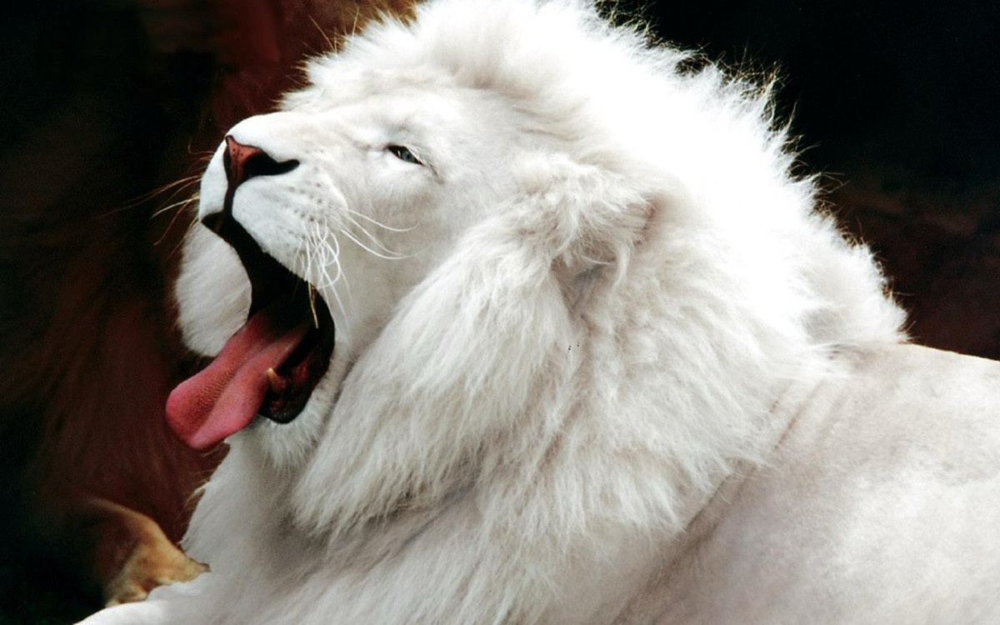

De cine-ți faci milă
Ce-i cu tine moșule
Ce ți s-a întâmplat?
Zise doctor Iepurilă
Pe leu când l-au consultat!
Cred că am spini în gât
Am gustat dintr-un arici
Spune Aaaa!…Vai ce urât
Ce crezi că o să-ți fac, ia ghici?
O să-l scoți, e chiar aici!
Și-i intră cu totu-n gură Iepurilă
Vindecându-l imediat
Fraieru-i plângea de milă
Însă leul l-a mâncat!
Morala:
“Pe cine nu lași să moară
Nu te lasă să trăiești!”
Vasile Groza